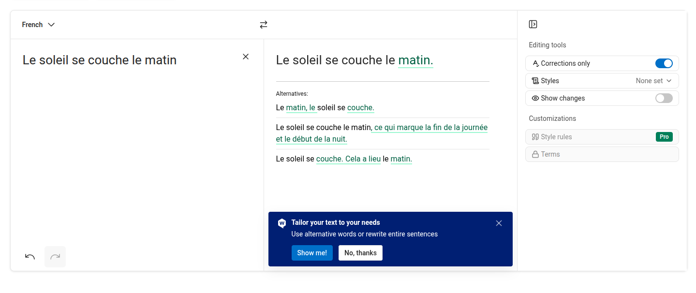

Automatiser la révision textuelle ?
![]()
2025-11-20
Révision ? : une question de définition
Avant de savoir quel outil utiliser, il faut se demander ce qu’on veut faire
Une tension entre deux tâches qui prennent place dans deux espace-temps différents :
- les protocoles éditoriaux établis au sein d’institutions et historicisables
- les pratiques de brouillonnages individuelles
Changement de paradigme
Grammar Error Correction: tâche de Traitement Automatique de la Langue Naturelle, proche de la Traduction Automatique.
- Correction évaluée à partir d’un gold standard (phrase incorrecte v. phrase corrigée idéale)
- Complexité du système proportionnelle à la grammaire.
Évolution de la correction automatique:
- Correction ortho-typographique
- Reformulation
- Masquer l’utilisation d’une IA pour la génération de texte
Une question de système de valeurs
- Traitement de texte / outils de révision ➝ recherche de productivité
- On constate donc un changement dans dans les pratiques et les usages qui suivent ou sont suivies, on sait pas trop par l’évolution des outils
- Quelle valeur on accorde au travail du texte ?
- Un gain de temps ?
- La rédaction académique : qu’implique la déprise du texte ? une déprise du sens ? Est-ce que l’idée est vraiment détachée de la forme ?
Risques et limites à l’utilisation de LLM pour la correction
Homogénéisation de la langue
- le LLM reflète des données d’entraînement mais aussi les phases de reinforcement learning qui l’oriente vers certains comportements standards porteurs de normes (ex: Français parisien) (Lodge 1993).
- S’il est possible de demander à un LLM de changer son comportement, il est ramené vers ses paramètres généraux : c’est “l’attraction par défaut” (Paschalidis 2025).
- La portion croissante de données synthétiques dans les jeux d’entraînement de ses modèles renforce leurs biais (perte de diversité) et rends les réponses des modèles moins fiables (effondrement).


Hypercorrection ?


Un idéal de clarté qui finit par s’auto-parodier (le fameux style chatgpt)
We show that while the core content of texts is retained when LLMs polish and rewrite texts, not only do they homogenize writing styles, but they also alter stylistic elements in a way that selectively amplifies certain dominant characteristics or biases while suppressing others - emphasizing conformity over individuality. By varying LLMs, prompts, classifiers, and contexts, we show that these trends are robust and consistent. (Sourati et al. 2025)
Si une formulation est fortement présente dans le corpus d’entraînement est-ce que c’est nécessairement la meilleure ? L’approche par défaut vaut-elle pour tous les contextes ?
Il y a des contextes dans lesquels la langue se doit d’être normée : contexte académique.
Effet nivelant et autorité de la machine ?
La délégation de la tâche de relecture et des tâches associées à la correction (traduction, mise en page) a un effet nivelant.
Les moins bons traducteurs sont aidés par la TA mais les meilleurs traducteurs sont désavantagés par la TA. Effet limitant car tendance à se laisser influencer : réduction des intuitions de traduction et de la créativité traductionnelle. (Schumacher 2023)
La délégation cognitive et l’influence que ces machines ont sur nous individuellement n’est pas négligeable (voir Vicente and Matute (2023)).
Conclusion
Les outils incarnent une vision du monde centrée sur la productivité et la rapidité
Assiste-t-on a une déprise tu texte et à une déprise du sens ? Existe-t-il un seuil, une limite, au-delà de laquelle le recours aux LLMs constitue une perte de maîtrise du texte ?
Les promesses de gain de temps et de productivité cachent des enjeux économiques forts : on ne peut que rester méfiants tant face aux biais de ces outils qu’à notre propension à être influencé par ses outils.
Pour en savoir plus
Voir l’atelier IA sur la correction animé par (Grometto and Schneider 2025)
Questions
Quels outils utilisez vous pour la correction des textes ?
Est-ce que vous constatez un gain de temps ou est-ce qu’il faut relire le relecteur automatique aussi ?
Est-ce que vous constatez que les corrections proposées ‘améliorent’ ou ‘amoindrissent’ la qualité du texte que vous comptez publier ?
Est-ce que les fonctionnalités de ‘détection de textes générés par IA’ vous aident/aideraient dans vos travaux (enseignement, édition, peer review) ?